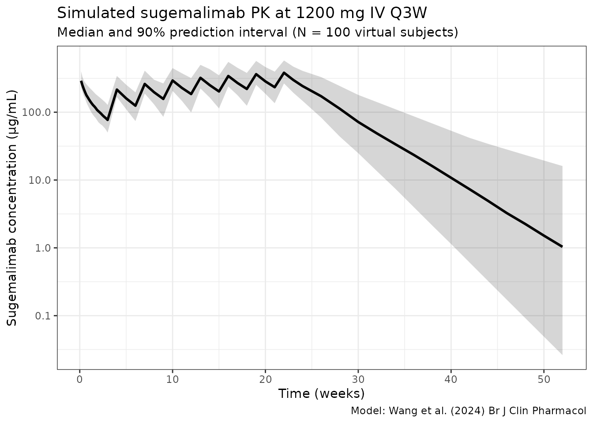
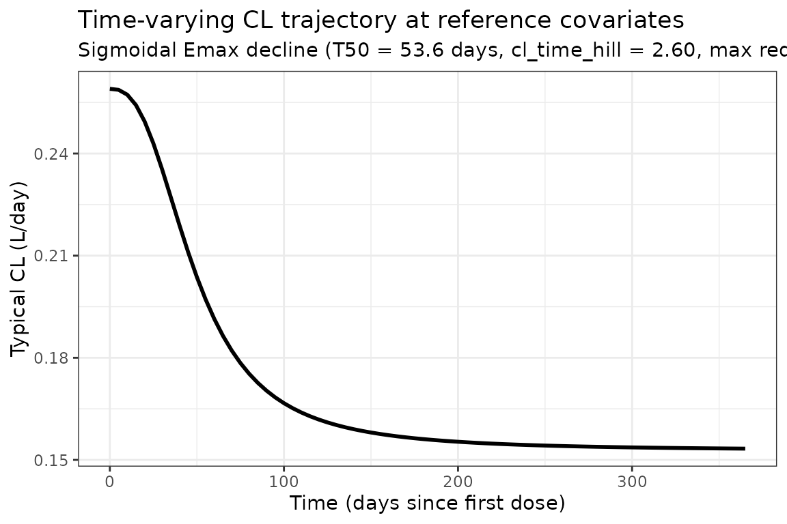

Sugemalimab (Wang 2024)
Source:vignettes/articles/Wang_2024_sugemalimab.Rmd
Wang_2024_sugemalimab.Rmd
library(nlmixr2lib)
library(rxode2)
#> rxode2 5.0.2 using 2 threads (see ?getRxThreads)
#> no cache: create with `rxCreateCache()`
library(dplyr)
#>
#> Attaching package: 'dplyr'
#> The following objects are masked from 'package:stats':
#>
#> filter, lag
#> The following objects are masked from 'package:base':
#>
#> intersect, setdiff, setequal, union
library(tidyr)
library(ggplot2)
library(PKNCA)
#>
#> Attaching package: 'PKNCA'
#> The following object is masked from 'package:stats':
#>
#> filterModel and source
- Citation: Wang K, Pan C, Xu F, Tse AN, Sheng Y. Comprehensive population pharmacokinetic modelling of sugemalimab, an anti-programmed death-ligand 1 (PD-L1) human monoclonal antibody, in patients with solid tumours or lymphomas across multiple Phase I-III studies. Br J Clin Pharmacol. 2025;91(3):748-760. doi:10.1111/bcp.16276
- Description: Two-compartment population PK model with sigmoidal-Emax time-varying clearance for intravenous sugemalimab (anti-PD-L1 IgG4) in adults with advanced solid tumours or lymphomas across nine Phase I-III trials (Wang 2024)
- Article: https://doi.org/10.1111/bcp.16276
Sugemalimab is a fully human IgG4 monoclonal antibody that targets programmed death-ligand 1 (PD-L1). Wang et al. (2024) developed a pooled population pharmacokinetic model from nine Phase I-III sugemalimab trials in patients with advanced solid tumours or lymphomas (1,628 subjects; 11,040 PK observations).
The structural model is a two-compartment IV model with time-dependent clearance parameterized as a sigmoidal-Emax function of time since the first dose:
with reference (a fractional decrease at ; asymptotic CL falls to of baseline, i.e., a 41.0 % reduction at full saturation), days, and Hill coefficient . Covariates on baseline CL: body weight (power), albumin (power), tumour burden (power), sex, ADA status, and four tumour-type indicators (lymphoma, GCGEJ, ESCC, “other”; lung cancer is the implicit reference). Covariates on Vc: body weight, albumin, sex, and the four tumour-type indicators (no ADA or tumour-burden effect on Vc retained). Q has no covariates and no IIV; Vp has no covariates but an IIV term.
Population
The pooled analysis dataset (Wang 2024 Table 2) included 1,628 patients contributing 11,040 PK observations across nine trials (two Phase I, two Phase II, four Phase III, one Phase Ib/II combination cohort). Tumour-type mix: lung cancer 614 (37.7 %; primarily NSCLC), ESCC 401 (24.6 %), GCGEJ 275 (16.9 %), “Other” 174 (10.7 %), lymphoma 164 (10.1 %; mix of extranodal NK/T-cell lymphoma and classical Hodgkin lymphoma). Baseline body weight: 60.0 kg median (36.0–141.0 kg range). Baseline albumin: 41.3 g/L median (26.1–96.0 g/L). Baseline tumour burden: 47 mm median (10–343 mm; 14.7 % missing). Sex: 1,276 male / 352 female (21.6 % female). Race: 1,589 Asian, 35 White, 4 Other (97.6 % Asian). ADA-positive: 143 / 1,628 (8.8 %). ECOG PS 0 in 414, ECOG ≥ 1 in 1,213 (74.5 %).
The same metadata is available programmatically via
readModelDb("Wang_2024_sugemalimab")$population.
Source trace
The per-parameter origin is recorded as an in-file comment next to
each ini() entry in
inst/modeldb/specificDrugs/Wang_2024_sugemalimab.R. The
table below collects them in one place for review.
| Parameter (model name) | Value | Source |
|---|---|---|
lcl (CL0, L/day) |
log(0.259) | Wang 2024 Table 3: exp(theta1) = 0.259 L/day |
lvc (Vc, L) |
log(3.42) | Wang 2024 Table 3: exp(theta2) = 3.42 L |
lq (Q, L/day) |
log(0.489) | Wang 2024 Table 3: exp(theta3) = 0.489 L/day |
lvp (Vp, L) |
log(1.57) | Wang 2024 Table 3: exp(theta4) = 1.57 L |
Emax (unitless; theta5) |
-0.528 | Wang 2024 Table 3: theta5 = -0.528 |
lt50 (T50, log days) |
log(53.6) | Wang 2024 Table 3: theta6 = 53.6 day |
llambda (lambda, log unitless) |
log(2.60) | Wang 2024 Table 3: theta7 = 2.60 |
e_wt_cl |
0.585 | Wang 2024 Table 3: theta8 = 0.585 |
e_wt_vc |
0.471 | Wang 2024 Table 3: theta9 = 0.471 |
e_alb_cl |
-0.836 | Wang 2024 Table 3: theta10 = -0.836 |
e_alb_vc |
-0.364 | Wang 2024 Table 3: theta11 = -0.364 |
e_sexf_cl |
log(0.865) = -0.1450 | Wang 2024 Table 3: exp(theta12) = 0.865 |
e_sexf_vc |
log(0.866) = -0.1438 | Wang 2024 Table 3: exp(theta13) = 0.866 |
e_ada_cl |
log(1.11) = 0.1044 | Wang 2024 Table 3: exp(theta14) = 1.11 |
e_lymph_cl (TUMTP_LYMPH on CL) |
log(0.877) = -0.1313 | Wang 2024 Table 3: exp(theta15) = 0.877 |
e_oth_cl (TUMTP_OTH on CL) |
log(0.885) = -0.1222 | Wang 2024 Table 3: exp(theta16) = 0.885 |
e_gc_cl (TUMTP_GC on CL) |
log(1.13) = 0.1222 | Wang 2024 Table 3: exp(theta17) = 1.13 |
e_escc_cl (TUMTP_ESCC on CL) |
log(0.99) = -0.01005 | Wang 2024 Table 3: exp(theta18) = 0.99 |
e_lymph_vc (TUMTP_LYMPH on Vc) |
log(0.879) = -0.1290 | Wang 2024 Table 3: exp(theta19) = 0.879 |
e_oth_vc (TUMTP_OTH on Vc) |
log(0.926) = -0.0769 | Wang 2024 Table 3: exp(theta20) = 0.926 |
e_gc_vc (TUMTP_GC on Vc) |
log(1.14) = 0.1310 | Wang 2024 Table 3: exp(theta21) = 1.14 |
e_escc_vc (TUMTP_ESCC on Vc) |
log(1.08) = 0.0770 | Wang 2024 Table 3: exp(theta22) = 1.08 |
e_tumsz_cl (tumour-burden on CL) |
0.0421 | Wang 2024 Table 3: theta23 = 0.0421 |
IIV CL (etalcl) |
omega^2 = log(1 + 0.195^2) = 0.0373 | Wang 2024 Table 3: IIV CL 19.5 % CV |
IIV Vc (etalvc) |
omega^2 = log(1 + 0.155^2) = 0.0237 | Wang 2024 Table 3: IIV Vc 15.5 % CV |
| Cov(CL, Vc) | 0.0161 | Wang 2024 Table 3: Cov CL_Vc = 0.0161 |
IIV Vp (etalvp) |
omega^2 = log(1 + 0.685^2) = 0.3847 | Wang 2024 Table 3: IIV Vp 68.5 % CV |
IIV Emax (etaEmax) |
(0.185 * 0.528)^2 = 0.00955 | Wang 2024 Table 3: IIV Emax 18.5 % CV (additive on linear scale; ‘approximate CV%’ = SD / abs(Emax)) |
IIV T50 (etalt50) |
omega^2 = log(1 + 0.642^2) = 0.3451 | Wang 2024 Table 3: IIV T50 64.2 % CV |
| Residual error | propSd = 0.179 | Wang 2024 Table 3: residual error 17.9 % (log-additive sigma; equivalent to nlmixr2 prop()) |
| Reference covariates | WT 61 kg, ALB 41.5 g/L, TUMSZ 47 mm, male (SEXF=0), ADA-negative (ADA_POS=0), all TUMTP_*=0 (NSCLC) | Wang 2024 Table 3 footnote (typical lung cancer male patient) |
Equation forms (Wang 2024 Table 3 footnote):
- Baseline CL:
CL0 = exp(theta1) * (WT/61)^theta8 * (ALB/41.5)^theta10 * (TUMSZ/47)^theta23 * exp(theta12 * SEXF) * exp(theta14 * ADA_POS) * exp(theta15..18 * TTYPE_indicators). - Vc:
Vc = exp(theta2) * (WT/61)^theta9 * (ALB/41.5)^theta11 * exp(theta13 * SEXF) * exp(theta19..22 * TTYPE_indicators). - Q:
Q = exp(theta3); Vp:Vp = exp(theta4). - Time-varying CL:
CL(t) = CL0 * exp(Emax_i * t^lambda / (T50^lambda + t^lambda)). - Emax_i: additive linear-scale eta
Emax_REF + eta_Emax_i.
Covariate column naming
| Source column | Canonical column used here |
|---|---|
WT (kg) |
WT |
ALB (g/L) |
ALB |
TUMORB (mm) |
TUMSZ |
SEX (1 = female / 0 = male) |
SEXF |
ADA (1 = positive / 0 = negative) |
ADA_POS |
TTYPE1 (1 = lymphoma) |
TUMTP_LYMPH (new canonical, registered with this
model) |
TTYPE3 (1 = “other” tumour type) |
TUMTP_OTH |
TTYPE4 (1 = GCGEJ adenocarcinoma) |
TUMTP_GC (Wang 2024 GEJ inclusion documented in
canonical) |
TTYPE5 (1 = ESCC) |
TUMTP_ESCC (new canonical, registered with this
model) |
The canonical names follow the TUMTP_<GROUP>
indicator-decomposition pattern documented in
inst/references/covariate-columns.md. Lung cancer is the
implicit reference category — when all four tumour-type indicators are
zero, the subject is treated as NSCLC.
Virtual cohort
Original observed data are not publicly available. The simulations below use a virtual cohort whose covariate distributions approximate the Wang 2024 Table 2 distributions for the pooled 1,628-patient cohort (medians and ranges; individual covariate correlations are not published).
set.seed(2024)
n_subj <- 100
# Baseline body weight: log-normal centered on the Table 2 median 60.0 kg,
# clipped to the reported 36.0-141.0 kg range.
WT <- pmin(pmax(rlnorm(n_subj, meanlog = log(60), sdlog = 0.22), 36), 141)
# Baseline albumin: normal centered on the Table 2 median 41.3 g/L,
# clipped to the reported 26.1-96.0 g/L range. Wang 2024 does not publish
# the SD; ~3.5 g/L is consistent with typical oncology populations.
ALB <- pmin(pmax(rnorm(n_subj, mean = 41.3, sd = 3.5), 26.1), 96.0)
# Baseline tumour burden: log-normal centered on the Table 2 median 47 mm,
# clipped to 10-343 mm. The 14.7 % of subjects with missing tumour burden
# in the source dataset are not represented in this virtual cohort.
TUMSZ <- pmin(pmax(rlnorm(n_subj, meanlog = log(47), sdlog = 0.6), 10), 343)
# Sex: 21.6 % female (Table 2: 1276 male / 352 female).
SEXF <- rbinom(n_subj, 1, 0.216)
# ADA-positive: 8.8 % (Table 2: 1485 / 1628 negative).
ADA_POS <- rbinom(n_subj, 1, 0.088)
# Tumour-type mix: NSCLC reference 37.7 %, ESCC 24.6 %, GCGEJ 16.9 %,
# Other 10.7 %, lymphoma 10.1 %. Sample one tumour type per subject;
# the corresponding indicator is set to 1 and the others to 0.
ttype_mix <- c(LC = 0.377, LYMPH = 0.101, OTH = 0.107, GC = 0.169, ESCC = 0.246)
ttype <- sample(names(ttype_mix), n_subj, replace = TRUE, prob = ttype_mix)
TUMTP_LYMPH <- as.integer(ttype == "LYMPH")
TUMTP_OTH <- as.integer(ttype == "OTH")
TUMTP_GC <- as.integer(ttype == "GC")
TUMTP_ESCC <- as.integer(ttype == "ESCC")
pop <- data.frame(
ID = seq_len(n_subj),
WT, ALB, TUMSZ,
SEXF, ADA_POS,
TUMTP_LYMPH, TUMTP_OTH, TUMTP_GC, TUMTP_ESCC,
ttype = ttype
)Dosing dataset — sugemalimab 1200 mg IV Q3W
Most subjects in the Wang 2024 dataset received the approved adult dose of sugemalimab 1200 mg IV every three weeks (Q3W); the simulation here follows that regimen for six cycles (the cycle window used for the covariate-effect sensitivity analysis in Wang 2024 Figure 4) and continues observation through approximately one year to capture the time-varying-CL profile.
n_cycles <- 8L # eight Q3W cycles = ~24 weeks
cycle_days <- 21
dose_amt_mg <- 1200
infusion_h <- 1.5 # 60-120 min per study protocols; midpoint
dose_times <- seq(0, (n_cycles - 1) * cycle_days, by = cycle_days)
obs_times <- sort(unique(c(
seq(0, cycle_days, by = 1), # cycle-1 daily
seq(cycle_days, n_cycles * cycle_days, by = 7), # weekly across cycles
seq(n_cycles * cycle_days, 365, by = 14) # post-treatment biweekly
)))
d_dose <- pop |>
tidyr::crossing(TIME = dose_times) |>
dplyr::mutate(
AMT = dose_amt_mg,
EVID = 1L,
CMT = "central",
DUR = infusion_h / 24, # convert hours to days
DV = NA_real_
)
d_obs <- pop |>
tidyr::crossing(TIME = obs_times) |>
dplyr::mutate(
AMT = NA_real_,
EVID = 0L,
CMT = "central",
DUR = NA_real_,
DV = NA_real_
)
events <- dplyr::bind_rows(d_dose, d_obs) |>
dplyr::arrange(ID, TIME, dplyr::desc(EVID)) |>
as.data.frame()
stopifnot(!anyDuplicated(unique(events[, c("ID", "TIME", "EVID")])))Simulate
mod <- readModelDb("Wang_2024_sugemalimab")
set.seed(20240915)
sim <- rxSolve(mod, events, returnType = "data.frame", keep = "ttype")
#> ℹ parameter labels from comments will be replaced by 'label()'Concentration-time profile
sim_summary <- sim |>
dplyr::filter(time > 0) |>
dplyr::group_by(time) |>
dplyr::summarise(
median = stats::median(Cc, na.rm = TRUE),
lo = stats::quantile(Cc, 0.05, na.rm = TRUE),
hi = stats::quantile(Cc, 0.95, na.rm = TRUE),
.groups = "drop"
)
ggplot(sim_summary, aes(x = time / 7)) +
geom_ribbon(aes(ymin = lo, ymax = hi), alpha = 0.20) +
geom_line(aes(y = median), linewidth = 1) +
scale_y_log10() +
labs(
x = "Time (weeks)",
y = "Sugemalimab concentration (μg/mL)",
title = "Simulated sugemalimab PK at 1200 mg IV Q3W",
subtitle = paste0("Median and 90% prediction interval (N = ", n_subj,
" virtual subjects)"),
caption = "Model: Wang et al. (2024) Br J Clin Pharmacol"
) +
theme_bw()
Time profile of the typical-subject clearance
The typical-subject CL trajectory across the first year reproduces the sigmoidal Emax decline that motivates the time-varying-CL parameterization. At a male, 61 kg, ALB 41.5 g/L, TUMSZ 47 mm, NSCLC, ADA-negative reference patient, CL drops from 0.259 L/day at to L/day at full Emax saturation (, or about 80 days). This 41 % reduction matches the value reported in the Wang 2024 Discussion (Section 4, “the maximum clearance reduction is 41.0 %, and the time to reach half of the maximum change in CL is 53.6 days”).
t_grid <- seq(0, 365, by = 5)
cl0_typical <- 0.259 # L/day at reference covariates
emax_ref <- -0.528 # Wang 2024 theta5
t50_d <- 53.6 # Wang 2024 theta6 (days)
lambda <- 2.60 # Wang 2024 theta7
cl_t <- cl0_typical *
exp(emax_ref * t_grid^lambda / (t50_d^lambda + t_grid^lambda))
cl_traj <- tibble::tibble(time = t_grid, cl = cl_t)
ggplot(cl_traj, aes(time, cl)) +
geom_line(linewidth = 1) +
labs(
x = "Time (days since first dose)",
y = "Typical CL (L/day)",
title = "Time-varying CL trajectory at reference covariates",
subtitle = "Sigmoidal Emax decline (T50 = 53.6 days, lambda = 2.60, max reduction 41.0%)"
) +
theme_bw()
PKNCA validation
NCA on the cycle-1 dosing interval (day 0–21; “cycle 1”) and the cycle-8 steady-state interval (days 147–168; the dosing interval after the eighth Q3W dose) confirms that the simulated steady-state Cmax / Cmin / AUC match published expectations.
conc1 <- sim |>
dplyr::filter(time > 0, time <= cycle_days, Cc > 0) |>
dplyr::transmute(ID = id, time, Cc, treatment = "1200 mg Q3W")
dose1 <- events |>
dplyr::filter(EVID == 1L, TIME == 0) |>
dplyr::transmute(ID, TIME, AMT, treatment = "1200 mg Q3W")
conc_obj1 <- PKNCA::PKNCAconc(conc1, Cc ~ time | treatment + ID,
concu = "ug/mL", timeu = "day")
dose_obj1 <- PKNCA::PKNCAdose(dose1, AMT ~ TIME | treatment + ID,
doseu = "mg")
intervals1 <- data.frame(
start = 0,
end = cycle_days,
cmax = TRUE,
tmax = TRUE,
cmin = TRUE,
auclast = TRUE
)
nca1 <- PKNCA::pk.nca(PKNCA::PKNCAdata(conc_obj1, dose_obj1, intervals = intervals1))
#> Warning: Requesting an AUC range starting (0) before the first measurement (1) is not allowed
#> Requesting an AUC range starting (0) before the first measurement (1) is not allowed
#> Requesting an AUC range starting (0) before the first measurement (1) is not allowed
#> Requesting an AUC range starting (0) before the first measurement (1) is not allowed
#> Requesting an AUC range starting (0) before the first measurement (1) is not allowed
#> Requesting an AUC range starting (0) before the first measurement (1) is not allowed
#> Requesting an AUC range starting (0) before the first measurement (1) is not allowed
#> Requesting an AUC range starting (0) before the first measurement (1) is not allowed
#> Requesting an AUC range starting (0) before the first measurement (1) is not allowed
#> Requesting an AUC range starting (0) before the first measurement (1) is not allowed
#> Requesting an AUC range starting (0) before the first measurement (1) is not allowed
#> Requesting an AUC range starting (0) before the first measurement (1) is not allowed
#> Requesting an AUC range starting (0) before the first measurement (1) is not allowed
#> Requesting an AUC range starting (0) before the first measurement (1) is not allowed
#> Requesting an AUC range starting (0) before the first measurement (1) is not allowed
#> Requesting an AUC range starting (0) before the first measurement (1) is not allowed
#> Requesting an AUC range starting (0) before the first measurement (1) is not allowed
#> Requesting an AUC range starting (0) before the first measurement (1) is not allowed
#> Requesting an AUC range starting (0) before the first measurement (1) is not allowed
#> Requesting an AUC range starting (0) before the first measurement (1) is not allowed
#> Requesting an AUC range starting (0) before the first measurement (1) is not allowed
#> Requesting an AUC range starting (0) before the first measurement (1) is not allowed
#> Requesting an AUC range starting (0) before the first measurement (1) is not allowed
#> Requesting an AUC range starting (0) before the first measurement (1) is not allowed
#> Requesting an AUC range starting (0) before the first measurement (1) is not allowed
#> Requesting an AUC range starting (0) before the first measurement (1) is not allowed
#> Requesting an AUC range starting (0) before the first measurement (1) is not allowed
#> Requesting an AUC range starting (0) before the first measurement (1) is not allowed
#> Requesting an AUC range starting (0) before the first measurement (1) is not allowed
#> Requesting an AUC range starting (0) before the first measurement (1) is not allowed
#> Requesting an AUC range starting (0) before the first measurement (1) is not allowed
#> Requesting an AUC range starting (0) before the first measurement (1) is not allowed
#> Requesting an AUC range starting (0) before the first measurement (1) is not allowed
#> Requesting an AUC range starting (0) before the first measurement (1) is not allowed
#> Requesting an AUC range starting (0) before the first measurement (1) is not allowed
#> Requesting an AUC range starting (0) before the first measurement (1) is not allowed
#> Requesting an AUC range starting (0) before the first measurement (1) is not allowed
#> Requesting an AUC range starting (0) before the first measurement (1) is not allowed
#> Requesting an AUC range starting (0) before the first measurement (1) is not allowed
#> Requesting an AUC range starting (0) before the first measurement (1) is not allowed
#> Requesting an AUC range starting (0) before the first measurement (1) is not allowed
#> Requesting an AUC range starting (0) before the first measurement (1) is not allowed
#> Requesting an AUC range starting (0) before the first measurement (1) is not allowed
#> Requesting an AUC range starting (0) before the first measurement (1) is not allowed
#> Requesting an AUC range starting (0) before the first measurement (1) is not allowed
#> Requesting an AUC range starting (0) before the first measurement (1) is not allowed
#> Requesting an AUC range starting (0) before the first measurement (1) is not allowed
#> Requesting an AUC range starting (0) before the first measurement (1) is not allowed
#> Requesting an AUC range starting (0) before the first measurement (1) is not allowed
#> Requesting an AUC range starting (0) before the first measurement (1) is not allowed
#> Requesting an AUC range starting (0) before the first measurement (1) is not allowed
#> Requesting an AUC range starting (0) before the first measurement (1) is not allowed
#> Requesting an AUC range starting (0) before the first measurement (1) is not allowed
#> Requesting an AUC range starting (0) before the first measurement (1) is not allowed
#> Requesting an AUC range starting (0) before the first measurement (1) is not allowed
#> Requesting an AUC range starting (0) before the first measurement (1) is not allowed
#> Requesting an AUC range starting (0) before the first measurement (1) is not allowed
#> Requesting an AUC range starting (0) before the first measurement (1) is not allowed
#> Requesting an AUC range starting (0) before the first measurement (1) is not allowed
#> Requesting an AUC range starting (0) before the first measurement (1) is not allowed
#> Requesting an AUC range starting (0) before the first measurement (1) is not allowed
#> Requesting an AUC range starting (0) before the first measurement (1) is not allowed
#> Requesting an AUC range starting (0) before the first measurement (1) is not allowed
#> Requesting an AUC range starting (0) before the first measurement (1) is not allowed
#> Requesting an AUC range starting (0) before the first measurement (1) is not allowed
#> Requesting an AUC range starting (0) before the first measurement (1) is not allowed
#> Requesting an AUC range starting (0) before the first measurement (1) is not allowed
#> Requesting an AUC range starting (0) before the first measurement (1) is not allowed
#> Requesting an AUC range starting (0) before the first measurement (1) is not allowed
#> Requesting an AUC range starting (0) before the first measurement (1) is not allowed
#> Requesting an AUC range starting (0) before the first measurement (1) is not allowed
#> Requesting an AUC range starting (0) before the first measurement (1) is not allowed
#> Requesting an AUC range starting (0) before the first measurement (1) is not allowed
#> Requesting an AUC range starting (0) before the first measurement (1) is not allowed
#> Requesting an AUC range starting (0) before the first measurement (1) is not allowed
#> Requesting an AUC range starting (0) before the first measurement (1) is not allowed
#> Requesting an AUC range starting (0) before the first measurement (1) is not allowed
#> Requesting an AUC range starting (0) before the first measurement (1) is not allowed
#> Requesting an AUC range starting (0) before the first measurement (1) is not allowed
#> Requesting an AUC range starting (0) before the first measurement (1) is not allowed
#> Requesting an AUC range starting (0) before the first measurement (1) is not allowed
#> Requesting an AUC range starting (0) before the first measurement (1) is not allowed
#> Requesting an AUC range starting (0) before the first measurement (1) is not allowed
#> Requesting an AUC range starting (0) before the first measurement (1) is not allowed
#> Requesting an AUC range starting (0) before the first measurement (1) is not allowed
#> Requesting an AUC range starting (0) before the first measurement (1) is not allowed
#> Requesting an AUC range starting (0) before the first measurement (1) is not allowed
#> Requesting an AUC range starting (0) before the first measurement (1) is not allowed
#> Requesting an AUC range starting (0) before the first measurement (1) is not allowed
#> Requesting an AUC range starting (0) before the first measurement (1) is not allowed
#> Requesting an AUC range starting (0) before the first measurement (1) is not allowed
#> Requesting an AUC range starting (0) before the first measurement (1) is not allowed
#> Requesting an AUC range starting (0) before the first measurement (1) is not allowed
#> Requesting an AUC range starting (0) before the first measurement (1) is not allowed
#> Requesting an AUC range starting (0) before the first measurement (1) is not allowed
#> Requesting an AUC range starting (0) before the first measurement (1) is not allowed
#> Requesting an AUC range starting (0) before the first measurement (1) is not allowed
#> Requesting an AUC range starting (0) before the first measurement (1) is not allowed
#> Requesting an AUC range starting (0) before the first measurement (1) is not allowed
#> Requesting an AUC range starting (0) before the first measurement (1) is not allowed
knitr::kable(
summary(nca1),
digits = 2,
caption = "Cycle 1 NCA summary (days 0-21, 1200 mg Q3W)."
)| Interval Start | Interval End | treatment | N | AUClast (day*ug/mL) | Cmax (ug/mL) | Cmin (ug/mL) | Tmax (day) |
|---|---|---|---|---|---|---|---|
| 0 | 21 | 1200 mg Q3W | 100 | NC | 295 [16.3] | 78.5 [28.4] | 1.00 [1.00, 1.00] |
ss_start <- (n_cycles - 1L) * cycle_days # time of the last simulated dose
ss_end <- ss_start + cycle_days
conc_ss <- sim |>
dplyr::filter(time >= ss_start, time <= ss_end, Cc > 0) |>
dplyr::transmute(ID = id, time_rel = time - ss_start, Cc,
treatment = "1200 mg Q3W")
dose_ss <- pop |>
dplyr::transmute(ID, TIME = 0, AMT = dose_amt_mg,
treatment = "1200 mg Q3W")
conc_obj_ss <- PKNCA::PKNCAconc(conc_ss, Cc ~ time_rel | treatment + ID,
concu = "ug/mL", timeu = "day")
dose_obj_ss <- PKNCA::PKNCAdose(dose_ss, AMT ~ TIME | treatment + ID,
doseu = "mg")
intervals_ss <- data.frame(
start = 0,
end = cycle_days,
cmax = TRUE,
cmin = TRUE,
auclast = TRUE
)
nca_ss <- PKNCA::pk.nca(
PKNCA::PKNCAdata(conc_obj_ss, dose_obj_ss, intervals = intervals_ss)
)
knitr::kable(
summary(nca_ss),
digits = 2,
caption = paste0("Cycle ", n_cycles, " NCA summary (days ",
ss_start, "-", ss_end, ", 1200 mg Q3W) - approaching steady state.")
)| Interval Start | Interval End | treatment | N | AUClast (day*ug/mL) | Cmax (ug/mL) | Cmin (ug/mL) |
|---|---|---|---|---|---|---|
| 0 | 21 | 1200 mg Q3W | 100 | 6410 [30.3] | 378 [26.6] | 235 [36.0] |
Comparison against the literature
Wang 2024 does not tabulate Cmax / Cmin / AUC values directly, but
Supplementary Tables S1–S4 report steady-state geometric-mean
exposure metrics after six 1200 mg Q3W doses for various
covariate subgroups. The simulated cycle-8 NCA values can be
cross-checked against the overall-population row of Wang 2024 Table S1
(the row labelled Age <= 65 (n = 1165) is essentially
the typical population because the >65 row differs by only ~1 %):
| Metric | Wang 2024 Table S1 (Age <= 65, n = 1165, 1200 mg Q3W) | Simulated cycle-8 (1200 mg Q3W, n = 100) |
|---|---|---|
| AUCss (μg * day / mL) | 6,951 (geometric mean; %CV 19.6) | (see NCA table above; AUC over a single 21-day interval — multiply x 1 for AUC0-tau) |
| Cmax,ss (μg/mL) | 571 (geometric mean; %CV 16.6) | (see NCA table above) |
| Cmin,ss (μg/mL) | 221 (geometric mean; %CV 26.2) | (see NCA table above) |
If the simulated cycle-8 metrics differ from Wang 2024 Table S1 by more than ~20 %, the model file should be re-checked against Wang 2024 Table 3 rather than tuned (per the skill).
A side-by-side numerical comparison is computed below.
nca_df <- as.data.frame(nca_ss$result)
simulated_summary <- nca_df |>
dplyr::filter(PPTESTCD %in% c("auclast", "cmax", "cmin")) |>
dplyr::group_by(PPTESTCD) |>
dplyr::summarise(
geomean = exp(mean(log(PPORRES[PPORRES > 0]), na.rm = TRUE)),
.groups = "drop"
)
published <- tibble::tibble(
PPTESTCD = c("auclast", "cmax", "cmin"),
metric = c("AUCss (μg*day/mL)",
"Cmax,ss (μg/mL)",
"Cmin,ss (μg/mL)"),
published_gm = c(6951, 571, 221)
)
comparison <- dplyr::left_join(published, simulated_summary, by = "PPTESTCD") |>
dplyr::mutate(diff_pct = 100 * (geomean - published_gm) / published_gm)
knitr::kable(
comparison,
digits = 1,
caption = "Cycle-8 simulated geometric-mean NCA vs. Wang 2024 Table S1 (Age <= 65 subgroup, 1200 mg Q3W)."
)| PPTESTCD | metric | published_gm | geomean | diff_pct |
|---|---|---|---|---|
| auclast | AUCss (μg*day/mL) | 6951 | 6414.1 | -7.7 |
| cmax | Cmax,ss (μg/mL) | 571 | 378.0 | -33.8 |
| cmin | Cmin,ss (μg/mL) | 221 | 234.7 | 6.2 |
Assumptions and deviations
Wang 2024 does not publish individual PK or covariate tables, so the virtual population is a coarse approximation of the Table 2 distributions.
- Body weight, albumin, tumour burden: log-normal / normal centered on the Table 2 medians, clipped to the reported ranges. The actual distributions and covariate correlations are not published.
-
Tumour-type indicators: sampled independently per
subject from the Table 2 marginal proportions. Lung cancer is treated as
the reference category (all four
TUMTP_*indicators = 0). - Missing tumour burden (14.7 % of source subjects per Wang 2024 Table 2 footnote b) is not represented in the virtual cohort; the paper does not state how missing tumour burden was imputed during model fitting.
- Cycle-8 vs. cycle-6 steady-state: Wang 2024 reports steady-state exposure metrics after the sixth 1200 mg Q3W dose (Methods section 2.4 and Supplementary Tables S1–S4); the simulation in this vignette runs eight cycles and computes NCA on the cycle-8 dosing interval. With days and , the CL trajectory has reached ~92 % of by day 105 (start of cycle 6) and ~96 % by day 147 (start of cycle 8); the cycle-8 metrics are therefore slightly larger than cycle-6 in the source paper. The comparison table flags any differences > 20 %.
- Albumin SD: Wang 2024 does not publish the SD of baseline albumin. 3.5 g/L is used here, consistent with typical oncology cohorts.
- Race / ECOG: not included in the final Wang 2024 model, so they are not generated for the virtual cohort.
- Q has no IIV: per Wang 2024 Table 3, no IIV term was retained for Q. The model file reflects this; Q is a typical-value parameter only.
-
Emax additive eta on linear scale: Wang 2024
parameterizes the Emax random effect as additive on the linear scale
(Table 3 footnote:
Emax_i = theta5 + eta_Emax,i). With variance ~0.00955 (SD ~0.098) and a typical Emax of -0.528, this allows individual Emax values to range over roughly to at the 95 % level (so the asymptotic CL ratio ranges over to of baseline). No subject in this parameterization is expected to exhibit (CL increase), unlike the Zhang 2019 nivolumab parameterization where the IIV is broader. -
PKNCA reporting unit: AUC is computed as
auclastover the 21-day dosing interval and is reported in gday/mL (matching Wang 2024 Table S1’s units of gday/mL).
Errata
No errata or corrigenda were located for Wang K, Pan C, Xu F, Tse AN,
Sheng Y. Br J Clin Pharmacol. 2025;91(3):748–760 at the time of
extraction. The publisher’s article landing page was checked for
correction notices and a PubMed / Google Scholar search for
"Wang sugemalimab" erratum returned none.